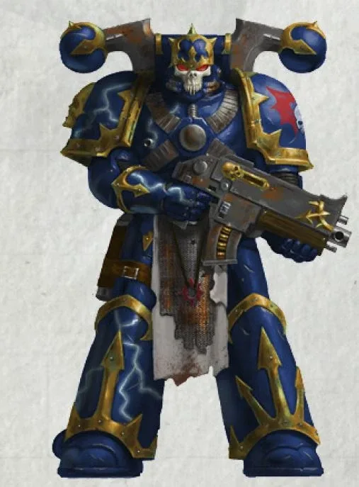
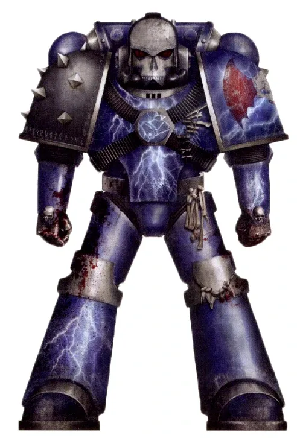
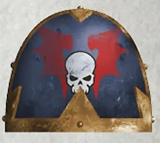
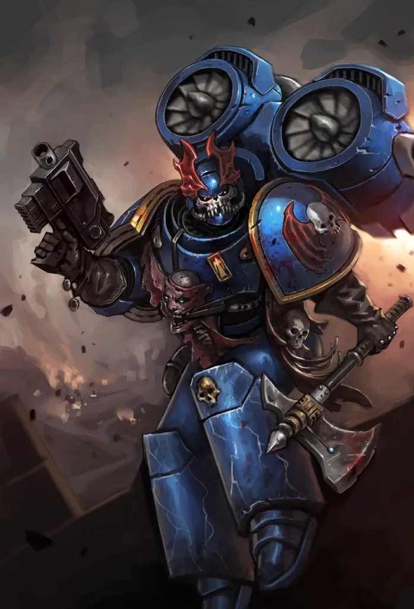
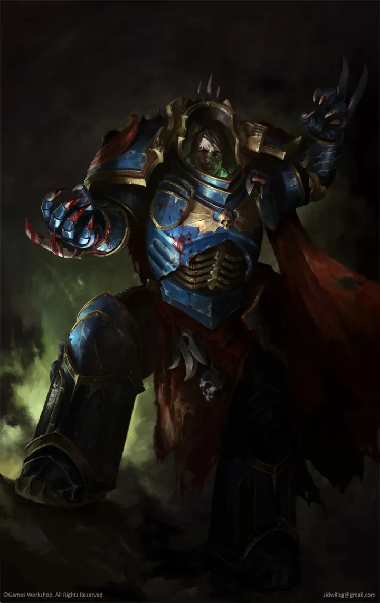
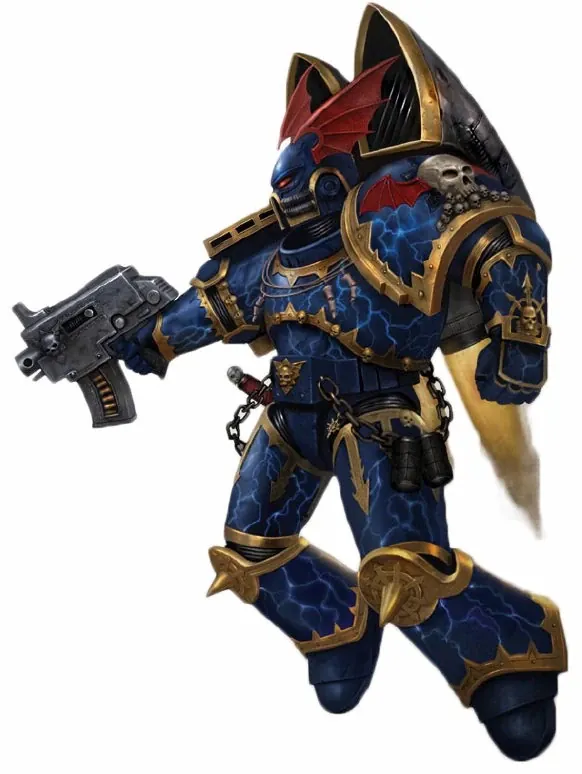
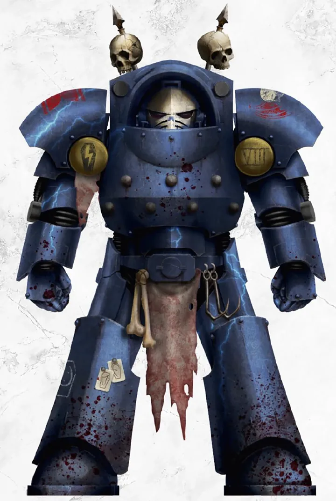
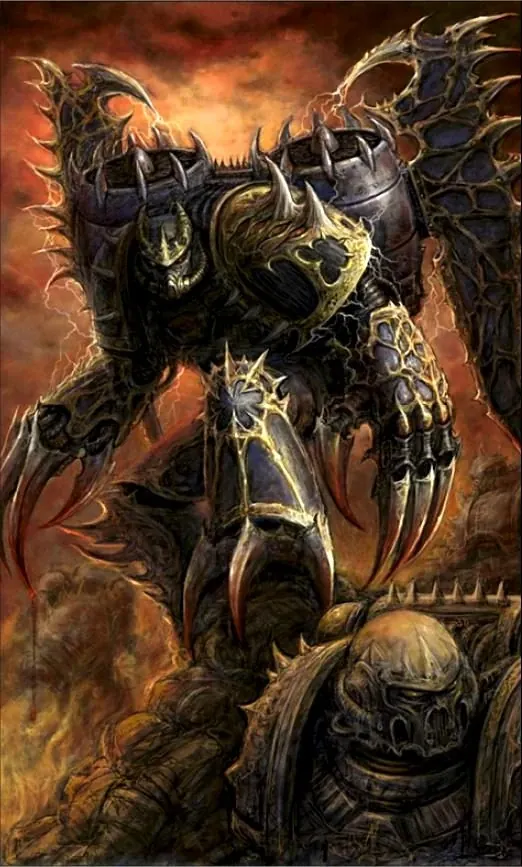

01ภาพรวม

ผู้ใช้ความหวาดกลัวเป็นอาวุธ — โจรสลัดแห่งความมืดที่ไม่เคยบูชาเทพองค์ใด
02ต้นกำเนิด
Legion ที่ 8 ภายใต้ Konrad Curze จากดาวที่ไม่เคยเห็นแสงอาทิตย์ Nostramo หลังการตายของ Curze Legion แตกเป็นกลุ่มโจรสลัดที่เร่ร่อนไปทั่ว
03เนื้อเรื่องเจาะลึก
Nostramo ดาวแห่งความมืด
Curze เติบโตบนดาว Nostramo ที่ไม่มีแสงอาทิตย์ เต็มไปด้วยอาชญากรรม เขากลายเป็นผู้ล่าอาชญากรในความมืด ใช้ความกลัวบังคับให้ดาวสงบ เมื่อเขาจากไป ดาวกลับสู่ความโกลาหล Curze จึงทำลายดาวบ้านเกิดของตัวเองทิ้ง
หลังความตายของบิดา
หลังการตายของ Curze Night Lords ไม่มีผู้นำ แตกเป็นกลุ่มโจรอวกาศที่ปล้นจักรวรรดิเพื่อเอาชีวิตรอด บางกลุ่มยังคงพยายามทำตามอุดมการณ์เดิม
04ยุค 30K — ในยุค Great Crusade และ Horus Heresy

ยุค 30K ถูกใช้ทำให้ดาวที่ดื้อยอมจำนนด้วยการสังหารโหดเป็นตัวอย่าง ความโหดร้ายนั้นทำให้พวกเขาถูกเรียกไปรับโทษ และหันไปเข้าร่วมกับ Horus
ดูภาพรวมยุค 30K ทั้งหมดที่ เนื้อเรื่องยุค 30K และความต่างของสองยุคที่ เปรียบเทียบ 30K vs 40K
05นิสัยและวัฒนธรรม
- ส่วนใหญ่ไม่บูชา Chaos แต่ใช้พลังของมันเมื่อเป็นประโยชน์
- ถลกหนังเหยื่อ แขวนศพ และส่งเสียงกรีดร้องผ่านวิทยุ
- มองตัวเองว่าเป็น 'ผู้ลงทัณฑ์' ของจักรวรรดิที่หน้าซื่อใจคด
06จุดที่น่าสนใจ
- หมวกปีกค้างคาวและลายสายฟ้า
- เสียงสัญญาณกรีดร้องที่ทำให้ศัตรูขวัญเสีย
07ความสามารถพิเศษ
สิ่งที่ทำให้ Night Lords แตกต่างจากทัพอื่น — ทั้งพลังที่ติดตัวมาทั้งเผ่า/ทัพ และความสามารถของบุคคลสำคัญ
ของทั้งเผ่า/ทัพ

ความกลัวคืออาวุธ
Night Lords ใช้การสร้างความหวาดกลัวเป็นยุทธวิธีหลัก — ถลกหนังเหยื่อ แขวนศพ ตัดไฟฟ้าทั้งเมือง และส่งเสียงกรีดร้องผ่านวิทยุ ทำให้ดาวยอมแพ้ก่อนรบจริง

Raptors กรีดร้องกลางคืน
หน่วยบินด้วย Jump Pack ติดลำโพงที่ส่งเสียงแหลม โจมตีในความมืด — Night Lords มี Raptors มากกว่า Legion อื่น

ไม่บูชาเทพ
แม้ใช้อาวุธและพลังของ Chaos แต่ Night Lords ส่วนใหญ่ไม่นับถือเทพองค์ใด พวกเขาเชื่อในความยุติธรรมแบบบิดเบี้ยวของ Konrad Curze: "ลงโทษทุกคน"
ของบุคคลสำคัญ

Konrad Curze
The Night HaunterPrimarch ผู้เห็นนิมิตอนาคตที่มืดมน (Precognition) รวมถึงความตายของตัวเอง เขาปล่อยให้มันเกิดขึ้นโดยส่งนักฆ่า M'Shen ของ Callidus เข้ามาฆ่าโดยไม่ขัดขืน เพื่อพิสูจน์ว่าจักรวรรดิก็เป็นอย่างที่เขาพูด
08หน่วยและบทบาทในกองทัพ
Night Lords ไม่นับถือเทพ Chaos องค์ใดเป็นพิเศษ แต่ใช้ความกลัวเป็นอาวุธ แบ่งเป็นกลุ่มโจร (Warband) อิสระ มีหน่วยโจมตีทางอากาศจำนวนมาก

Night Lord Chaos Lord
ผู้นำ Warbandผู้นำ Warband ที่ปกครองด้วยความกลัว เช่น Zso Sahaal ผู้อ้างสิทธิ์เป็นทายาทของ Konrad Curze
Raptors
แร็ปเตอร์หน่วยบินด้วย Jump Pack ติดลำโพงกรีดเสียงกลางคืนเพื่อสร้างความหวาดกลัว — สัญลักษณ์ของ Night Lords

Atramentar
อาทราเมนทาร์กองร้อยที่ 1 ในเกราะ Terminator องครักษ์ของ Konrad Curze มาตั้งแต่ยุค 30K

Warp Talons
วาร์ปทาลอนRaptors ที่มีกรงเล็บปีศาจ พุ่งออกจาก Warp เข้ากลางวงศัตรูโดยไม่ต้องบิน
หน่วยทั่วไปของ Chaos Space Marines (Sorcerer, Warpsmith, Dark Apostle ฯลฯ) ดูได้ที่ หน่วยและบทบาทของ Chaos Space Marines
09วีรกรรมและเหตุการณ์สำคัญ
Thramas Crusade
ปะทะ Dark Angels อย่างยาวนาน
ล่ายานของจักรวรรดิ
ใช้ความทรมานของผู้มีพลังจิตสร้างสัญญาณลวงยานที่หลงทาง
10ตัวละครสำคัญ

Konrad Curze
Primarch (เสียชีวิต)The Night Haunter
11ยุค 40K — สหัสวรรษที่ 41
ยุค 40K Night Lords เป็นกองโจรที่ปล้นโลกทั่วกาแล็กซี
12เนื้อเรื่องล่าสุด (Era Indomitus / M42)
ใช้ความมืดของ Imperium Nihilus เป็นโอกาส ปล้นดาวคลังเสบียง บุกป้อม Space Marines เพื่อชิงเจเนซีด บางกลุ่มตั้ง 'อาณาจักรเล็ก ๆ' ของตัวเองบนดาวที่ถูกตัดขาด
หลังการเกิด Great Rift ปฏิทินของจักรวรรดิคลาดเคลื่อน เหตุการณ์ยุคปัจจุบันจึงมักระบุเพียง 'M42' ไม่มีปีที่แน่นอน